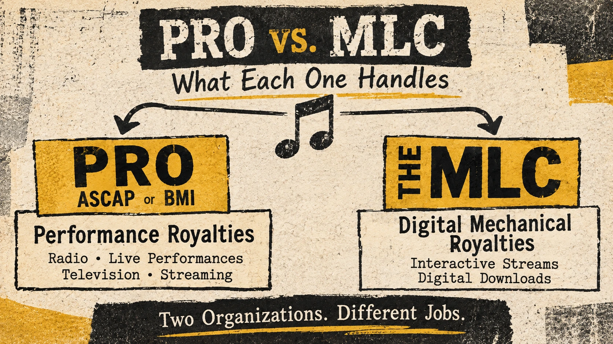

Resources / Publishing
PRO vs. MLC: What Each One Handles
The same song can earn different kinds of royalties. These two organizations handle different parts of the job.
By Resistance & Ground

Your song lands on a streaming service. Good. Then somebody tells you to join a PRO, somebody else says The MLC, and a third person assures you the distributor handled everything.
Music has a remarkable ability to turn one song into four dashboards and a mild headache.
Here's the useful distinction: a performing rights organization (PRO) handles public performance royalties for the composition. The Mechanical Licensing Collective (The MLC) handles certain U.S. digital mechanical royalties for that same composition.
A qualifying on-demand stream can generate both.
They're separate rights, with separate routes for getting paid.
What a PRO handles
A PRO such as ASCAP or BMI licenses public performances of musical compositions and distributes royalties to writers and publishers when their songs are performed in covered settings.
Think radio, live shows, television, businesses playing music, and eligible digital services.
"Performance" here is a rights category. It doesn't require you to be standing on a stage with a microphone and questionable monitor mix.
A PRO works with the song—the melody and lyrics—not your particular recording of it. If another band performs your song, that can still be a performance of your composition.
Register your works with your PRO, identify the writers and publisher interests accurately, and learn how that organization accepts reports for live performances.
A membership with no correctly registered songs is a bit like buying a mailbox and never telling anyone your address.
What The MLC handles
The MLC administers the U.S. blanket mechanical license used by eligible digital music services.
It collects and distributes mechanical royalties for covered interactive streams and digital downloads when those services operate under the blanket license.
An interactive stream is the kind where a listener chooses a particular track on demand.
The MLC matches reported recordings and usage to registered musical works, then distributes royalties to the appropriate publishing rightsholders. Those may be publishers, publishing administrators, or self-administered songwriters.
This is a specific slice of mechanical royalties.
The MLC isn't a worldwide catchall for every CD, vinyl sale, non-interactive radio play, or privately negotiated license. It also doesn't pay the recording-side royalties your distributor reports.
One organization cannot do every job simply because its login page looks official.
The difference at a glance
| PRO (ASCAP/BMI) | The MLC | |
|---|---|---|
| Primary responsibility | Public performance royalties | Covered U.S. digital mechanical royalties |
| Rights involved | Musical composition | Musical composition |
| Examples | Radio, live performances, TV, eligible streaming | Eligible on-demand streaming and digital downloads |
| Who receives payment | Writers and publishers, according to applicable rules | Publishing rightsholders or their administrators |
| What it doesn't handle | Every mechanical royalty | Public performance or recording-side royalties |
Neither organization replaces the other.
And neither one replaces your distributor.
One play can take different paths
Say someone chooses your original song on an on-demand streaming service in the United States.
That use may generate a public performance royalty for the composition, handled through the appropriate PRO route.
It may also generate a digital mechanical royalty under the blanket license, handled through The MLC.
Meanwhile, the recording itself has its own revenue path through the master owner and distributor.
Three paths can be active without anyone being paid three times for the same right.
The amounts won't necessarily be identical. A stream doesn't come with one tidy, fixed mechanical penny amount. Service plans, revenue, licensing terms, and reporting all matter.
If a dashboard says your song has streams, that doesn't prove every composition royalty has found its way home.
What to do with your own catalog
Start by checking whether your songs are registered correctly with your PRO. Confirm the writers, ownership interests, and identifying information.
Next, determine who's responsible for collecting your U.S. digital mechanical royalties.
If you have a publisher or publishing administrator, ask whether they register and claim your works with The MLC.
If you're self-administered, check The MLC's public data and membership requirements, then register or claim the works you're entitled to administer.
Don't create competing claims because you assumed a second registration would make money arrive faster.
Keep one dependable catalog record for every song:
- Song title and alternate titles
- Songwriters and agreed ownership splits
- Publisher or publishing administrator
- Writer and publisher IPI numbers, where applicable
- ISWC, when assigned
- Associated recording ISRCs, when available
- PRO and MLC registration or claim status
Compare that record against the organizations actually handling each royalty.
The paperwork is less romantic than the chorus, but it tends to be more useful when checks are missing.
The short version
Your PRO and The MLC aren't rivals.
They're two routes for two different rights in the same composition.
Work out who's collecting each one, get the song data right, and let the recording have its own lane.
Sources and further reading
- The Mechanical Licensing Collective — Digital Royalty Landscape
- The Mechanical Licensing Collective — PROs and Mechanical Royalties
- The Mechanical Licensing Collective — Membership and Registration
- ASCAP — Music Licensing and Royalties
- BMI — Music Licensing and Royalties
- U.S. Copyright Office — Musical Works and Sound Recordings
This article provides general educational information, not legal or tax advice. Check your agreements and current organizational requirements before registering works or changing claims.